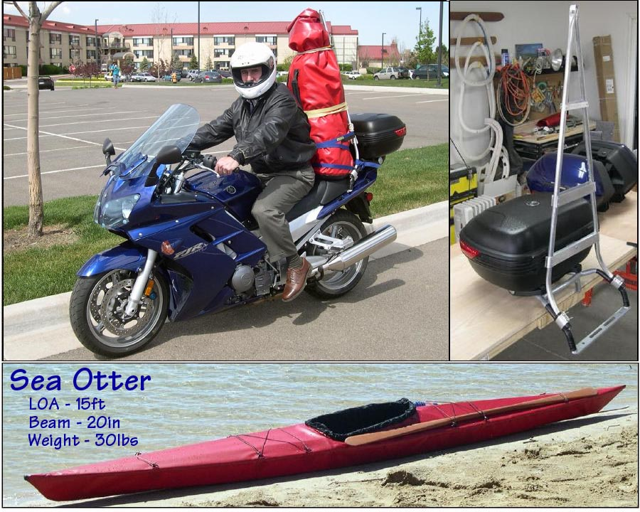

| Motorcycle Transport ( 6 of 7) | Menu Previous Page Next Page |
|

A small kayak like the 15ft (4.57m) Sea Otter has a packed size of 42in (106cm) and is ideal for mototrcycle transport. The travel bag used is a PVC dry bag that has been extended with an additional 10in PVC section. In addition to the kayak, the bag contains a paddle, sea sock, spray skirt, and PFD. Additional kayaking gear is carried in the "Givi" trunk bag. Several pages of details can be found in the Motorcycle / Folding Kayak Link. Use the (BACK) key to return. Though not kayaking related, I've compiled details and pics of several Colorado motorcycle rides in the Rocky Mountains. Use the (BACK) key to return. |
|